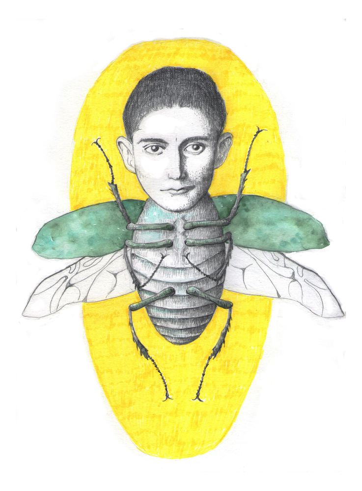
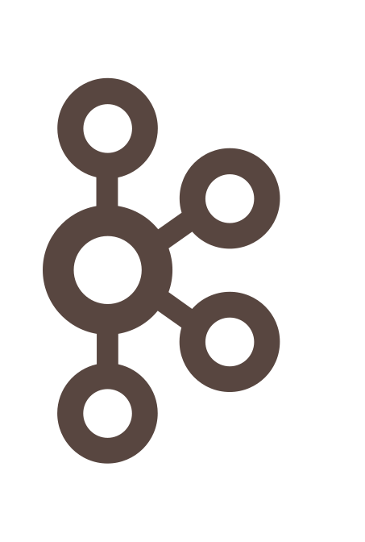

Kafka Streams API
Шаг за рамки Hello World
@inponomarev
 |
|
Всё, что я показываю, есть на гитхабе
 |
Наш план
 | Лекция 1.
Лекция 2.
|
Kafka это
 |
|
В Кафке можно
|
В Кафке нельзя
|
Топики, партиции и сообщения

Топики, партиции и сообщения

Топики, партиции и сообщения

Анатомия сообщения
Анатомия сообщения

// hash the keyBytes to choose a partition
return Utils.toPositive(Utils.murmur2(keyBytes)) % numPartitions;Чтение из Кафки

Чтение из Кафки
Чтение из Кафки

Чтение из Кафки
Offset Commit

Offset Commit

Offset Commit
Offset Commit

Offset Commit

Offset Commit

Offset Commit
Compacted topics

Как работает Retention

Потоковая обработка данных: архитектура

Где нужны потоковые системы?
Мониторинг! Логи!
Отслеживание действий пользователей
Выявление аномалий (в т. ч. попыток мошенничества)
 |
Существующие фреймворки потоковой обработки
Наш план
Лекция 1.
Лекция 2.
|
Kafka Streams API: общая структура KStreams-приложения
StreamsConfig config = ...;
//Здесь устанавливаем всякие опции
Topology topology = new StreamsBuilder()
//Здесь строим топологию
....build();Kafka Streams API: общая структура KStreams-приложения
Топология — конвейер обработчиков:

Преобразуем поток в поток

| (Автор анимаций — Тагир Валеев, движущиеся картинки см. здесь) |
Фильтруем
| |
Отображаем в консоль (терминальная операция)
| |
Всё вместе в одну строку
 | |
Ничего не напоминает?
«Соединить два файла, привести их строки к lowercase, отсортировать, вывести три последних строки в алфавитном порядке»
cat file1 file2 | tr "[A-Z]" "[a-z]" | sort | tail -3Kafka Streams API: общая структура KStreams-приложения
StreamsConfig config = ...;
//Здесь устанавливаем всякие опции
Topology topology = new StreamsBuilder()
//Здесь строим топологию
....build();
//Это за нас делает SPRING-KAFKA
KafkaStreams streams = new KafkaStreams(topology, config);
streams.start();
...
streams.close();В Спринге достаточно определить две вещи
@Bean KafkaStreamsConfiguration@Bean Topology
Легенда
|
@Bean KafkaConfiguration
//ВАЖНО!
@Bean(name =
KafkaStreamsDefaultConfiguration
.DEFAULT_STREAMS_CONFIG_BEAN_NAME)
public KafkaStreamsConfiguration getStreamsConfig() {
Map<String, Object> props = new HashMap<>();
//ВАЖНО!
props.put(StreamsConfig.APPLICATION_ID_CONFIG,
"stateless-demo-app");
//ВАЖНО!
props.put(StreamsConfig.NUM_STREAM_THREADS_CONFIG, 4);
props.put(StreamsConfig.BOOTSTRAP_SERVERS_CONFIG, "localhost:9092");
...
KafkaStreamsConfiguration streamsConfig =
new KafkaStreamsConfiguration(props);
return streamsConfig;
}@Bean NewTopic
@Bean
NewTopic getFilteredTopic() {
Map<String, String> props = new HashMap<>();
props.put(
TopicConfig.CLEANUP_POLICY_CONFIG,
TopicConfig.CLEANUP_POLICY_COMPACT);
return new NewTopic("mytopic", 10, (short) 1).configs(props);
}@Bean Topology

@Bean
public Topology createTopology(StreamsBuilder streamsBuilder) {
KStream<String, Bet> input = streamsBuilder.stream(...);
KStream<String, Long> gain
= input.mapValues(v -> Math.round(v.getAmount() * v.getOdds()));
gain.to(GAIN_TOPIC, Produced.with(Serdes.String(),
new JsonSerde<>(Long.class)));
return streamsBuilder.build();
}Три строчки кода, и что тут такого?
Больше сообщений в секунду? — больше машин с одинаковым
application.id!

Добавляем ноды
Ограничены только числом партиций
TopologyTestDriver: создание
KafkaStreamsConfiguration config = new KafkaConfiguration()
.getStreamsConfig();
StreamsBuilder sb = new StreamsBuilder();
Topology topology = new TopologyConfiguration().createTopology(sb);
TopologyTestDriver topologyTestDriver =
new TopologyTestDriver(topology,
config.asProperties());TestInput/OutputTopic: создание
TestInputTopic<String, Bet> inputTopic =
topologyTestDriver.createInputTopic(BET_TOPIC,
Serdes.String().serializer(),
new JsonSerde<>(Bet.class).serializer());
TestOutputTopic<String, Long> outputTopic =
topologyTestDriver.createOutputTopic(GAIN_TOPIC,
Serdes.String().deserializer(),
new JsonSerde<>(Long.class).deserializer());TopologyTestDriver: использование
Bet bet = Bet.builder()
.bettor("John Doe")
.match("Germany-Belgium")
.outcome(Outcome.H)
.amount(100)
.odds(1.7).build();
inputTopic.pipeInput(bet.key(), bet);TopologyTestDriver: использование
TestRecord<String, Long> record = outputTopic.readRecord();
assertEquals(bet.key(), record.key());
assertEquals(170L, record.value().longValue());Если что-то пошло не так…
default.deserialization.exception.handler— не смогли десериализоватьdefault.production.exception.handler— брокер отверг сообщение (например, оно слишком велико)
Если всё совсем развалилось
streams.setUncaughtExceptionHandler(
(Thread thread, Throwable throwable) -> {
. . .
});
В Спринге всё сложнее (см. код)
Состояния приложения KafkaStreams
Что ещё нужно знать про stateless-трансформации?
Простое ветвление стримов
Java-стримы так не могут:
KStream<..> foo = ...
KStream<..> bar = foo.mapValues(…).map... to...
Kstream<..> baz = foo.filter(…).map... forEach...
Ветвление стримов по условию
С версии 2.8:
gain.split()
.branch((key, value) -> key.contains("A"),
Branched.withConsumer(ks -> ks.to("A")))
.branch((key, value) -> key.contains("B"),
Branched.withConsumer(ks -> ks.to("B")));
Простое слияние
KStream<String, Integer> foo = ...
KStream<String, Integer> bar = ...
KStream<String, Integer> merge = foo.merge(bar);
Наш план
Лекция 1.
Лекция 2.
|
Локальное состояние
Facebook’s RocksDB — что это и зачем?
|
RocksDB похож на TreeMap<K,V>
Сохранение K,V в бинарном формате
Лексикографическая сортировка
Iterator (snapshot view)
Удаление диапазона (deleteRange)
Пишем “Bet Totalling App”
Какова сумма выплат по сделанным ставкам, если сыграет исход?

@Bean Topology
KStream<String, Bet> input = streamsBuilder.
stream(BET_TOPIC, Consumed.with(Serdes.String(),
new JsonSerde<>(Bet.class)));
KStream<String, Long> counted =
new TotallingTransformer()
.transformStream(streamsBuilder, input);Суммирование ставок
@Override
public KeyValue<String, Long> transform(String key, Bet value,
KeyValueStore<String, Long> stateStore) {
long current = Optional
.ofNullable(stateStore.get(key))
.orElse(0L);
current += value.getAmount();
stateStore.put(key, current);
return KeyValue.pair(key, current);
}StateStore доступен в тестах
@Test
void testTopology() {
topologyTestDriver.pipeInput(...);
topologyTestDriver.pipeInput(...);
KeyValueStore<String, Long> store =
topologyTestDriver
.getKeyValueStore(TotallingTransformer.STORE_NAME);
assertEquals(..., store.get(...));
assertEquals(..., store.get(...));
}Демо: Ребалансировка / репликация
Ребалансировка / репликация партиций state при запуске / выключении обработчиков.
Сохранение локального состояния в топик
$kafka-topics --zookeeper localhost --describe
Topic:bet-totalling-demo-app-totalling-store-changelog
PartitionCount:10
ReplicationFactor:1
Configs:cleanup.policy=compact
Партиционирование и local state
Партиционирование и local state

Партиционирование и local state

Партиционирование и local state
Партиционирование и local state

Партиционирование и local state
Партиционирование и local state

Партиционирование и local state
Репартиционирование
Явное при помощи
repartition(Repartitioned<K, V> repartitioned)Неявное при операциях, меняющих ключ + stateful-операциях
Дублирующееся неявное репартиционирование
KStream source = builder.stream("topic1");
KStream mapped = source.map(...);
KTable counts = mapped.groupByKey().aggregate(...);
KStream sink = mapped.leftJoin(counts, ...);
Избавляемся от дублирующегося репартиционирования
KStream source = builder.stream("topic1");
KStream shuffled = source.map(...).repartition(...);
KTable counts = shuffled.groupByKey().aggregate(...);
KStream sink = shuffled.leftJoin(counts, ...);Ключ лучше лишний раз не трогать
Key only: selectKey
Key and Value | Value Only |
|
|
|
|
|
|
|
|